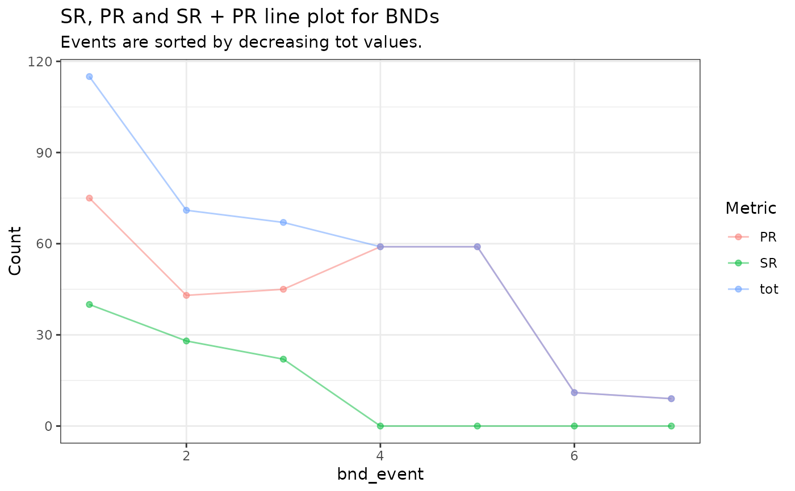
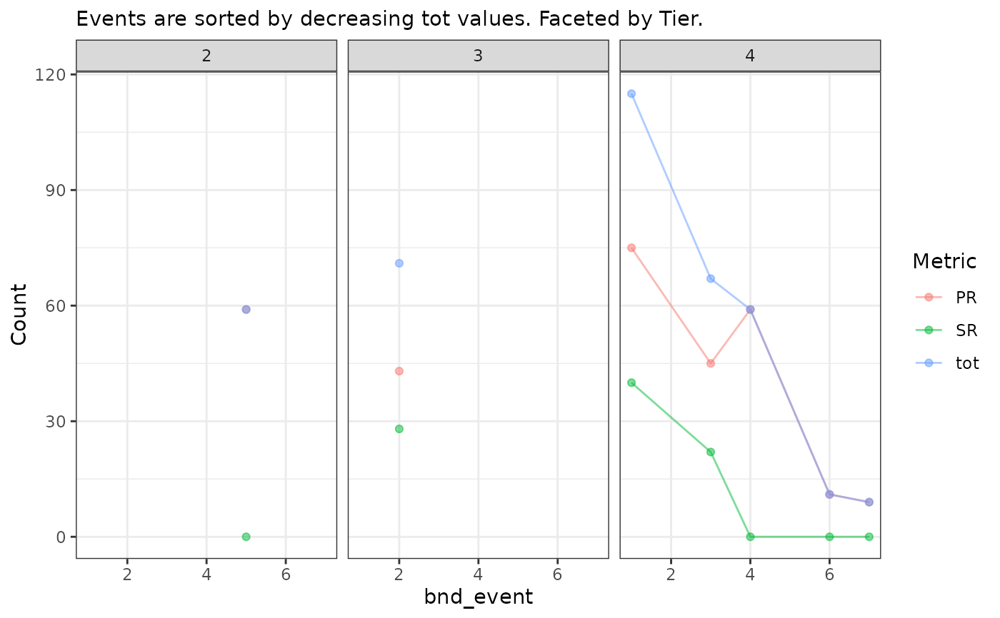

Plots the number of split reads (SR), paired end reads (PR), and their
sum (tot) across all BNDs, sorted by tot.
plot_bnd_sr_pr_tot_lines( d, title = "SR, PR and SR + PR line plot for BNDs", subtitle = "Events are sorted by decreasing tot values." )
| d | A data.frame with an SR_PR_alt column. |
|---|---|
| title | Main title of plot. |
| subtitle | Subtitle of plot. |
A ggplot2 plot object.
x <- system.file("extdata/umccrise/sv/manta.tsv", package = "gpgr") d <- process_sv(x)$unmelted plot_bnd_sr_pr_tot_lines(d)#> $p_all#> #> $p_tier#> #>#> #>#>